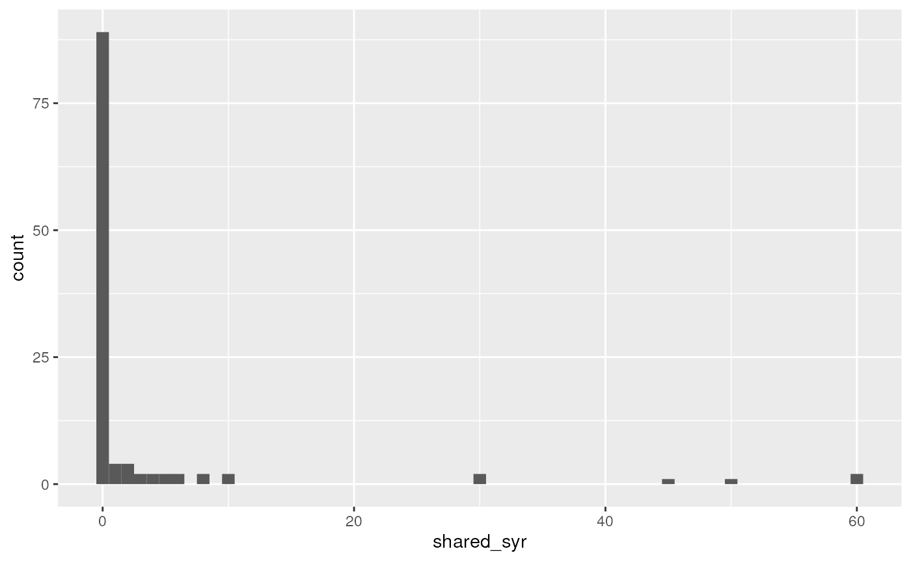

vignettes/session_lab.Rmd
session_lab.RmdsuppressPackageStartupMessages({ library(tidyverse) }) needledat <- readr::read_csv("needle_sharing.csv") needledat2 <- needledat %>% dplyr::filter(sex %in% c("M", "F") & ethn %in% c("White", "AA", "Hispanic") & !is.na(homeless)) %>% mutate( homeless = recode(homeless, "0" = "no", "1" = "yes"), hiv = recode( hivstat, "0" = "negative", "1" = "positive", "2" = "yes" ) )
meanvarzeros <- needledat2 %>% filter(complete.cases(shared_syr)) %>% summarise( mean = mean(shared_syr), var = var(shared_syr), fraczero = (sum(shared_syr == 0) / length(shared_syr)) ) meanvarzeros
## # A tibble: 1 x 3
## mean var fraczero
## <dbl> <dbl> <dbl>
## 1 3.12 113. 0.774The mean number of needle sharing events per participant is 3.12, the variance is 113, and the fraction of participants who never shared a needle is 0.774. (Note how I put computed results in the text here rather than writing in numbers manually - they will change automatically if the analysis is changed!)
This was done in the lecture using base R, but let’s do it here with ggplot2. Note the filtering of complete cases only is unnecessary because ggplot does it anyways, but this gets rid of a warning (try it without filtering). Specifying the binwidth is also unnecessary, but by default geom_histogram creates histogram bins of size 2 (ie 0 and 1 in the same bin, 2 and 3 together, …)
library(ggplot2) filter(needledat2, complete.cases(shared_syr)) %>% ggplot(aes(x = shared_syr)) + geom_histogram(binwidth = 1)

##
## Attaching package: 'MASS'## The following object is masked from 'package:dplyr':
##
## selectfit.negbin <- MASS::glm.nb(shared_syr ~ sex + ethn + homeless, data = needledat2)
## Classes and Methods for R developed in the
## Political Science Computational Laboratory
## Department of Political Science
## Stanford University
## Simon Jackman
## hurdle and zeroinfl functions by Achim Zeileisfit.ZIpois <- pscl::zeroinfl(shared_syr ~ sex + ethn + homeless | 1, dist = "poisson", data = needledat2)
fit.ZInegbin <- pscl::zeroinfl(shared_syr ~ sex + ethn + homeless | 1, dist = "negbin", data = needledat2)
I want to calculate the log-likelihood from each model. The simplest way is to call the logLik function one at a time:
logLik(fit.pois)
## 'log Lik.' -730.0133 (df=5)logLik(fit.negbin)
## 'log Lik.' -147.1277 (df=6)logLik(fit.ZIpois)
## 'log Lik.' -303.0276 (df=6)logLik(fit.ZInegbin)
## 'log Lik.' -146.7677 (df=7)Just to demonstrate a fancier way that could be used on many models, I’ll create a list of model objects:
listofmodels <- list( poisson = fit.pois, negbin = fit.negbin, ZIpois = fit.ZIpois, ZInegbin = fit.ZInegbin )
Then demonstrate how the lapply (also related functions like sapply) can be used to implicitly loop over elements of a list, to do exactly the same thing:
lapply(listofmodels, logLik)
## $poisson
## 'log Lik.' -730.0133 (df=5)
##
## $negbin
## 'log Lik.' -147.1277 (df=6)
##
## $ZIpois
## 'log Lik.' -303.0276 (df=6)
##
## $ZInegbin
## 'log Lik.' -146.7677 (df=7)OK now to actually answer the question. Just to get an idea of how big a difference in \(-2 \times log(likelihood)\) would be statistically significant on one difference of degrees of freedom:
qchisq(p=0.95, df = 1) #critical value is 3.84
## [1] 3.841459qchisq(p=0.05, df = 1, lower.tail = FALSE) #equivalent
## [1] 3.841459Or two degrees of freedom:
qchisq(p=0.95, df = 2) #critical value is 6
## [1] 5.991465All the differences in twice log-likelihood above are much larger than these critical significance values, except for the difference between negative binomial and zero-inflated negative binomial models.